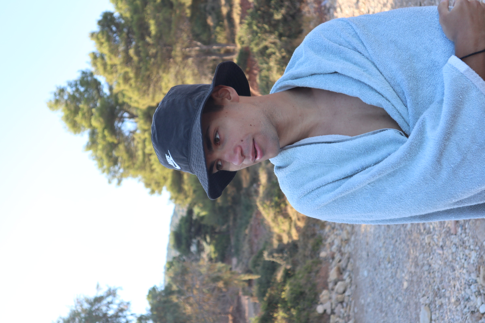

GR-NLP-TOOLKIT: An Open-Source NLP Toolkit for Modern Greek
COLING 2025
Anastasios (Tasos) Toumazatos

I am a second-year PhD student at UMD. My research focuses on the security and robustness of machine learning in database systems, with an emphasis on learned query optimization. I am interested in understanding when learned components fail, how those failures can be exploited, and how to make such systems more robust. I previously worked on NLP for Greek, including transliteration and language tools.
COLING 2025
LREC-COLING 2024
The best way to reach me is by email at tasos@umd.edu. You can also find me on GitHub and Google Scholar. Or at Iribe Center 5112, 8125 Paint Branch Dr, College Park, MD 20742 (most days of the week).